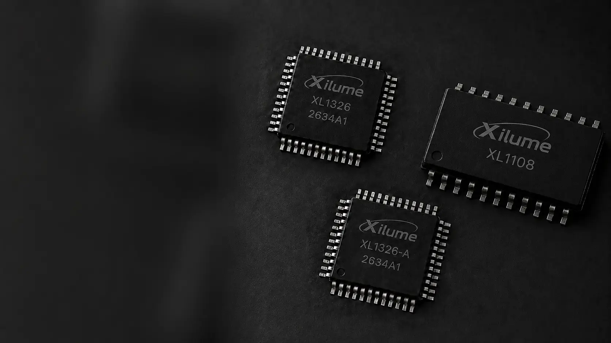

XILUME · INDUSTRIAL COMMUNICATION
CAN FD & serial
hardware and ICs.
Expand Windows and Linux computers over USB and Mini PCIe, or integrate USB controller ICs into your own PCB.
Modules & OEM design-inDrivers, datasheets and reference circuits